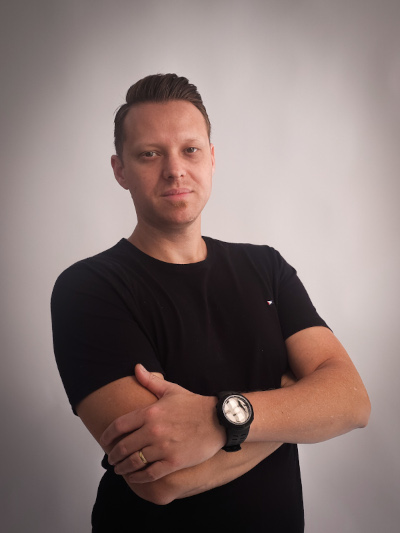

Linkedin
Linkedin GitHub
GitHub Intagram
Intagram
Me chamo Douglas de Melo e estou no processo de transição de carreira da área de metalurgia para
tecnologia, uma mudança que venho planejando e estudando há algum tempo.
Embora minha experiência profissional principal tenha sido na área de metalurgia, onde desenvolvi
habilidades técnicas, de resolução de problemas e de trabalho em equipe, também tenho
uma paixão enorme por tecnologia.
Sou graduado em Análise e Desenvolvimento de
Sistemas, e investindo em cursos específicos como:
Sistemas operacionais, Desenvolvimento Web, Redes, Segurança da informação.
E estou me familiarizando com os principais softwares.